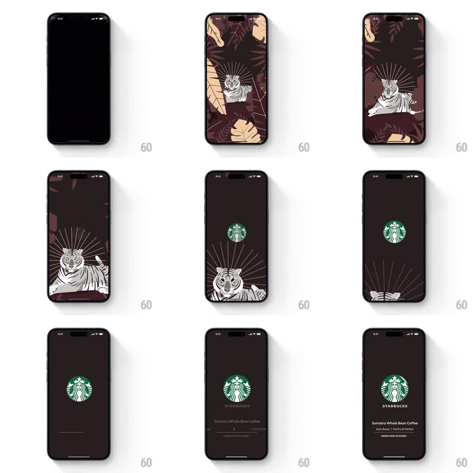

Media
Frame-by-frame

Rebuild this animation 1:1: Starbucks' Sumatra splash - a white tiger with radiating lines lounges in dark jungle foliage, then slides down and away as the siren logo and Sumatra details take the stage.

Rebuild this animation 1:1: Starbucks' Sumatra splash - a white tiger with radiating lines lounges in dark jungle foliage, then slides down and away as the siren logo and Sumatra details take the stage. ## Integration Integration: stack-agnostic spec - springs given as stiffness/damping, timed motions as duration + curve; map every value to your framework and animation library of choice. ## Scene Dark aubergine-brown jungle: beige palm fronds at the corners, a white-line tiger illustration reclining at center with thin rays radiating behind its head. End state: flat dark screen, green siren at center, STARBUCKS wordmark, "Sumatra Whole Bean Coffee", "Dark Roast | Earthy & Herbal", "ORDER NOW IN STORES". ## Motion spec Pattern: character slide-down reveal with staggered lockup. - The scene fades in from black (400ms); fronds slide in from corners (spring ~260/22, 80ms stagger) and the tiger's radiating lines draw outward (stroke trim, 500ms). - The tiger holds a beat with a slow tail sway (rotate +-3deg, 2s). - The whole illustration then slides down off screen (700ms, ease-in, slight 2deg rotation) while the field clears to flat dark (300ms). - The siren scales in (0.7 -> 1, spring ~280/18, 400ms) as the tiger exits, then wordmark and product lines stagger in (fade + rise 8pt, 250ms each, 120ms apart). ## Calibration - The tiger exit and logo entrance overlap by ~200ms - the handoff should feel continuous. - Radiating lines exit with the tiger; they never linger over the logo. ## Reduced motion Scene crossfades to logo stage (400ms); texts fade together. ## Don't miss - The tiger is elegant line art (cream on dark aubergine), rays included. - Final state matches the other Starbucks splashes exactly: same layout, same type stack, only the theme differs.